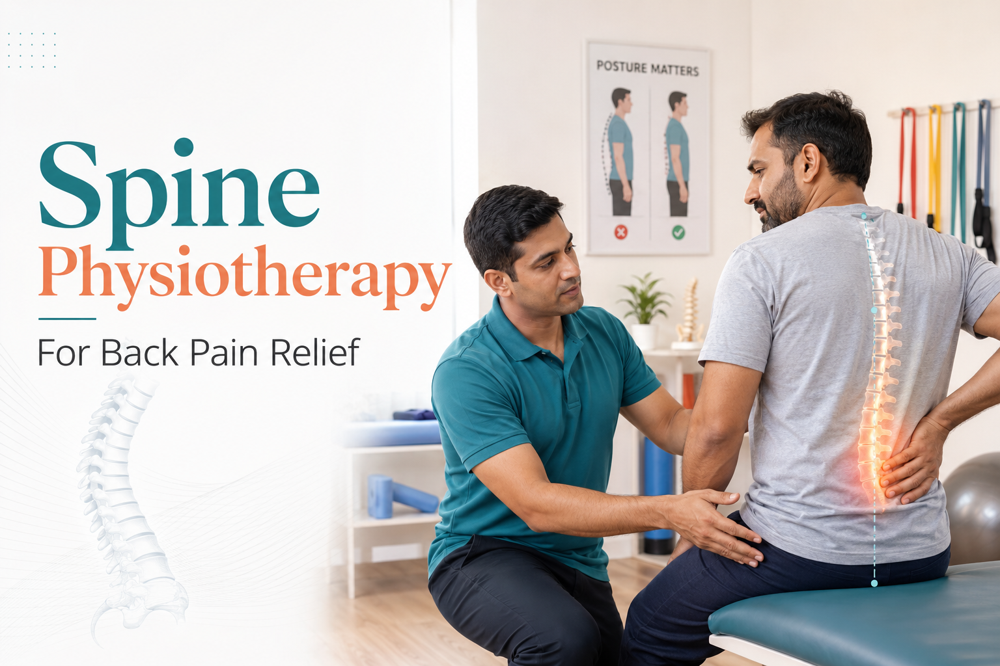

Spine Physiotherapy for Back Pain: What You Really Need to Know


07
May

Dr. Krutika Bhadane
PT (Neuro), BPTh, MPTh (Neurosciences), 3+ years clinical
experience in neurological rehabilitation
Let me start with something I see almost every week in my clinic. A patient comes in after months, sometimes years, of managing back pain on their own. They have stopped certain activities gradually. Maybe they gave up evening walks first. Then weekend outings. Then they started eating meals on the sofa because sitting at a dining table had become too painful.
When I ask why they waited so long, the answer is almost always the same: "I thought it was just age."
It is not just age. And more importantly, most of what causes that kind of slow, quiet suffering is treatable. That is what I want to walk you through today.
What Is Spine Physiotherapy, and What Does It Actually Do?
Spine physiotherapy is a structured, evidence-based treatment in which a trained physiotherapist assesses the root cause of your back or neck pain and designs a personalised programme of exercises, hands-on therapy, and movement retraining to reduce pain, restore function, and prevent the problem from coming back.
I want to be clear about one thing from the start: this is not about lying on a table with a heat pad. That is what most people picture when they hear the word physiotherapy. Real clinical spine physiotherapy is active, specific, and targeted at the actual problem underneath the pain.
Why Does the Spine Break Down? The Short Version
Your spine is a column of 33 vertebrae cushioned by intervertebral discs and held together by layers of muscle, ligament, and connective tissue. When everything is working correctly, you do not think about it at all. When it is not, the effects reach into almost every part of your daily life.
The most common underlying causes I see in patients include disc herniation (where the disc presses on a nearby nerve), facet joint degeneration, muscle imbalance, and postural dysfunction from years of incorrect movement habits.
Here is the thing most people do not realise: the spot where you feel the pain is often not where the problem originates. Someone who points to their lower back may actually have tight hip flexors, a weak deep core, or restricted movement in their mid-back. This is why a proper assessment matters far more than a scan alone.
The Piece That Most Back Pain Guides Skip: Central Sensitisation
If your loved one has been treated multiple times for back pain without lasting improvement, this may be why.
When pain continues over a long period, the nervous system itself changes. It becomes sensitised and starts amplifying pain signals beyond what the original tissue damage would justify. This is called central sensitisation. It explains why some patients with relatively minor structural changes on an MRI experience severe, disabling pain, while others with significant disc degeneration barely feel anything.
Research published in the Journal of Pain (2021) found that central sensitisation is present in a substantial proportion of patients with chronic lower back pain. Purely structural treatments, whether injections, surgery, or standard exercise programmes, often produce disappointing results in these patients because the problem is no longer only in the spine. It is in how the nervous system has learned to process and amplify the signals coming from that region.
A physiotherapist trained in pain neuroscience can identify this pattern and adjust the programme accordingly. Without this step, a patient can do all the right exercises and still not improve the way they should.
When Should Physiotherapy for Back Pain Start?
The short answer is: as early as possible.
For acute back pain, timing really does matter. Ideally, you want to start structured physiotherapy within the first two to four weeks. A 2018 systematic review in The Lancet looked at this specifically and found that patients who started active physiotherapy early were far less likely to still be dealing with pain months later, compared to those who just rested or took medication. Then in 2022, research published in Spine added to this picture. What that study found was that simply delaying the start of physiotherapy, independent of anything else, was linked to more cases becoming chronic, higher painkiller use, and worse recovery at the one-year mark.
Research in the Spine journal (2022) further confirmed that delayed physiotherapy for acute lower back pain is independently linked to higher rates of chronicity, increased medication use, and lower functional recovery at twelve months.
For chronic back pain that has been present for months or years, the answer is simpler: start now. Every additional month of untreated spine dysfunction compounds. Pain changes the way you move. Altered movement loads the spine incorrectly. Incorrect loading causes further degeneration. And if central sensitisation is developing, the nervous system learns a pattern of amplified pain that becomes harder to reverse the longer it is left in place.
Myth vs. Reality: What the Evidence Actually Shows
| Topic | Common Myth | What Evidence Shows |
|---|---|---|
| When to start | Rest first, then try physiotherapy if pain persists | Early structured physiotherapy within the first 2-4 weeks significantly reduces the risk of chronic pain |
| Root cause | A slipped disc is always the culprit | Most chronic back pain involves muscle imbalance, central sensitisation, and postural dysfunction together |
| Treatment | Exercises and stretching are enough | Pain neuroscience education is equally important; the nervous system needs retraining alongside muscles |
| Recovery time | 6-8 weeks of exercises and you are fixed | Without addressing root mechanics, recurrence within 12 months is well-documented |
What Actually Happens Inside a Physiotherapy Programme
After a thorough assessment covering posture, movement screening, neurological testing, and palpation of the spine, your physiotherapist designs a treatment plan matched to your specific problem. Here are the core evidence-based approaches used in clinical spinal physiotherapy.
McKenzie Method
A systematic approach to classifying your specific spinal problem and finding the movements that reduce and centralise your pain. Research in Physical Therapy journal (2020) found it produces significantly better outcomes than general exercise for disc-related back pain.
Motor Control Training
Two muscles come up in almost every chronic back pain case I assess: the transversus abdominis and the multifidus. These are deep stabilisers that most people have never heard of, and in patients with long-standing back pain, they are almost always underactive. Motor control training is specifically about waking these muscles back up and getting them to do their job again. A Cochrane Review updated in 2021 tracked patients through this kind of training and found meaningful improvements in both pain levels and physical function, with those gains still holding at the twelve-month follow-up.
Manual Therapy
Alongside exercise, I also use hands-on treatment for most patients. Manual therapy, which includes mobilisation and manipulation of the spinal joints, helps restore movement in areas that have become stiff or restricted. It also reduces the muscle guarding that builds up around a painful spine and helps correct the way load is being distributed through the vertebrae. Research published in the Journal of Orthopaedic and Sports Physical Therapy in 2021 looked at this specifically and found that combining manual therapy with exercise consistently outperformed using either one on its own.
Graded Activity and Exposure
Something that does not get discussed enough is what happens to people who have been in pain for a long time. Many of them stop moving, not out of laziness, but because movement has become something they associate with pain and fear. When this pattern sets in, the treatment has to address the fear alongside the physical problem. Graded activity and exposure does exactly that. It brings back the movements a patient has been avoiding, starting small and building gradually, so that both the body and the nervous system learn that movement is safe again.
How Many Sessions Does Back Pain Actually Need?
Honestly, this is probably the question I field more than any other. Families want a number. They want to know when it will be over. And the truthful answer is that the sessions are only one part of the equation.
NICE guidelines recommend between eight and twelve structured sessions over roughly six to eight weeks as a starting point for chronic lower back pain. A study published in the Pain journal in 2022 found that patients who completed twelve or more sessions had functional outcomes that were about 40% better at the six-month mark compared to those who had four sessions or fewer. So yes, the sessions matter.
But here is the part that surprises most people. A 2023 study in the British Journal of Sports Medicine looked at what actually predicted long-term recovery, and it was not how many clinic appointments a patient attended. It was consistent daily home exercise after formal treatment ended. Patients who continued structured daily home exercise for six months after discharge had significantly lower recurrence rates and better long-term function than those who stopped once the pain resolved.
The clinic gets you started. The daily habit is what keeps you well.
A Realistic Recovery Timeline
| Timeframe | What Is Happening | What to Expect |
|---|---|---|
| Weeks 1 to 4 | Inflammation reduces; deep stabiliser muscles begin activating | Pain starts decreasing; posture awareness improves; patient learns helpful vs aggravating movements |
| Month 1 to 3 | Motor control patterns improve; spinal joint mobility increases | Sitting and standing tolerance increases; referred pain often reduces; daily function improves noticeably |
| Month 3 to 6 | Structural adaptations consolidate; movement patterns become more automatic | Most patients with acute or subacute back pain reach near-full function with consistent effort |
| Month 6 to 12 | Maintenance phase; recurrence risk highest if home exercise stops | Strength consolidates; ergonomic habits become second nature; focus shifts to prevention |
| 12+ Months | Long-term management phase for structural degeneration or chronic sensitisation | Regular review physiotherapy and sustained exercise prevent deterioration and manage flare-ups |
What I See Specifically in Pune Patients
Pune, along with cities like Hyderabad and Bengaluru, has seen a sharp rise in spinal degeneration presenting in younger patients. Many professionals here spend eight to twelve hours daily at computer workstations, followed by commutes on two-wheelers that place sustained flexion load on the lumbar and thoracic spine.
A patient with significant disc-related back pain at age 35 is not unusual in my clinic anymore. This population needs physiotherapy, ergonomic education, and sustained exercise not as a short-term course but as a long-term health practice.
There is also the question of access. Trained spinal physiotherapists are concentrated in urban centres. Patients in smaller towns and rural Maharashtra often have access only to basic services or none at all after being discharged from a hospital. Telerehabilitation, where a qualified physiotherapist assesses and supervises your programme via video, is not a lesser option for these patients. In many cases it is the only clinically sound option available to them.
How Family Members Can Help or Make Things Harder
Spine rehabilitation requires sustained daily effort. Family members influence that effort more than they usually realise.
The most helpful things you can do as a family member:
- Learn the basics of the home exercise programme so you can encourage consistency; understanding why each exercise matters helps enormously with this
- Help create the physical conditions for exercise, whether that is clearing space or timing it with an existing daily routine
- Support ergonomic changes at home: the right chair height, a firm mattress, removing objects that require repeated bending from the floor
- Take pain complaints seriously without amplifying them; validate the experience without reinforcing the belief that all movement is dangerous
- Report any new weakness, numbness in the limbs, or bowel and bladder changes to the physiotherapist immediately
What to avoid:
- Insisting on complete rest because activity appears to cause discomfort; for most spinal conditions, appropriate movement is the treatment, not its opposite
- Taking over all physical tasks to spare the patient effort; losing functional capacity through disuse makes the spine problem worse
- Attributing everything to age and suggesting nothing will help; this framing is both inaccurate and clinically harmful
- Allowing the patient to skip home exercises on low-pain days; consistency during low-pain periods is precisely what prevents the next high-pain episode
The Emotional Side That Nobody Talks About Enough
Chronic back pain is one of the leading causes of depression and anxiety globally, and the relationship runs in both directions. Pain causes depression, and depression amplifies pain. Research consistently finds that depression affects 30 to 40% of people with chronic pain conditions and is one of the strongest predictors of poor treatment outcomes.
This is not about motivation or personality. Depression and chronic pain share overlapping brain circuits governing threat perception and emotional regulation. A patient who is depressed is experiencing a neurobiological state that makes the nervous system harder to retrain.
Families often notice the emotional toll before the patient will acknowledge it. If your loved one has become increasingly withdrawn or dismissive about whether things will improve, please do not assume this is just their personality. It is almost certainly about pain, and it needs to be addressed alongside physiotherapy, not after it.
A Final Thought
Back pain has a way of making people feel alone with it. The adjustments people make to accommodate it happen so gradually that even the people who love them most often only notice in retrospect how much has changed.
The families I have seen achieve real, lasting improvement are not the ones who found the best painkiller. They are the ones who stopped waiting for the pain to resolve on its own, sought a proper assessment from a qualified spinal physiotherapist, and then treated rehabilitation as a shared family commitment.
If your loved one has been managing back pain for months and quietly shrinking their world to avoid what hurts, the most important question is simply this: what is actually stopping you from finding out whether that change is possible?
Physiotherapy for back pain, posture correction, and long-term spine health are core services at Apricot Care, Kharadi, Pune. In-clinic and online assessments are available.
References
- Hartvigsen J, et al. What low back pain is and why we need to pay attention. The Lancet. 2018;391(10137):2356-2367.
- Nijs J, et al. Central sensitisation in chronic musculoskeletal pain: a narrative review. Journal of Pain. 2021;22(6):605-621.
- Hayden JA, et al. Exercise therapy for chronic low back pain. Cochrane Database of Systematic Reviews. Updated 2021; Issue 9.
- Childs JD, et al. Manual therapy combined with exercise for back pain. Journal of Orthopaedic and Sports Physical Therapy. 2021;51(6):293-302.
- Foster NE, et al. Prevention and treatment of low back pain: evidence, challenges, and promising directions. Pain. 2022;163(8).
- National Institute for Health and Care Excellence. Low back pain and sciatica in over 16s: assessment and management. NICE Guideline NG59. Updated 2020.
- Telerehabilitation for musculoskeletal conditions systematic review. World Journal of Advanced Research and Reviews. 2025.
- AI-powered platforms in musculoskeletal rehabilitation. PMC Systematic Review. 2025.
About
author
Dr. Krutika
Bhadane is a Neurophysiotherapist and Clinical Physiotherapist at
Apricot Care, Kharadi, Pune, with 3 years of experience in adult
neurological rehabilitation.